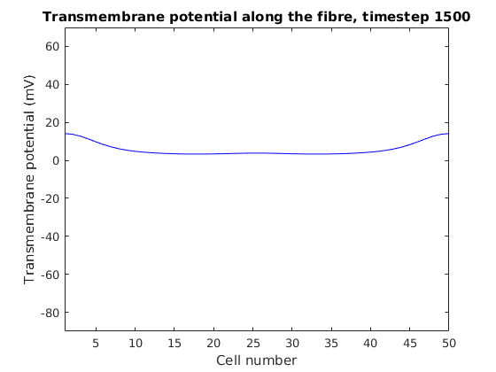
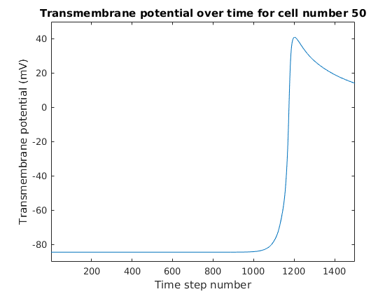
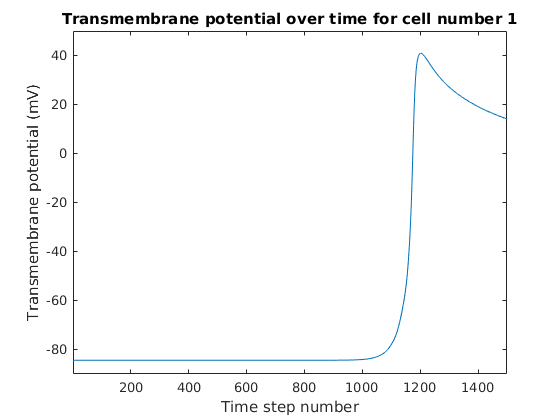

exercise 1
Contents
a. how many input/output parameters RunAndVisualiseMonodomainSimulation takes
% the function RunAndVisualiseMonodomainSimulation has: % 2 output parameters: [ finalVoltage, conductionVelocities ] % 5 input parameters: (numberCells, % simulationDuration, % leftFibreHalfconductivity, % rightFibreHalfconductivity, % visualiseSimulation) % definitions of parameters: % % outputs: % finalVoltage - transmembrane potential accross the domain % at the end of the simulation % conductionVelocities - a vector % with the conduction velocity computed at each end of the fibre % inputs: % numberCells, number of cells in simulation % simulationDuration, how long the simulation will be run for % leftFibreHalfconductivity,conductivities used in the left and right half of the fibre, respectively. % rightFibreHalfconductivity,conductivities used in the left and right half of the fibre, respectively. % visualiseSimulation - If visualiseSimulation is true, the evolution of the % transmembrane potential throughout the simulation is plotted, as well as % the action potential shape at both ends of the fibre.
ex1 qb
RunAndVisualiseMonodomainSimulation(50,15,1.4,1.4,true)
ans =
14.1286
13.7672
12.7587
11.3222
9.7449
8.2662
7.0207
6.0438
5.3077
4.7600
4.3495
4.0370
3.7968
3.6137
3.4789
3.3877
3.3369
3.3241
3.3465
3.4002
3.4799
3.5772
3.6805
3.7735
3.8341
3.8341
3.7735
3.6805
3.5772
3.4799
3.4002
3.3465
3.3241
3.3369
3.3877
3.4789
3.6137
3.7968
4.0370
4.3495
4.7600
5.3077
6.0438
7.0207
8.2662
9.7449
11.3222
12.7587
13.7672
14.1286
  